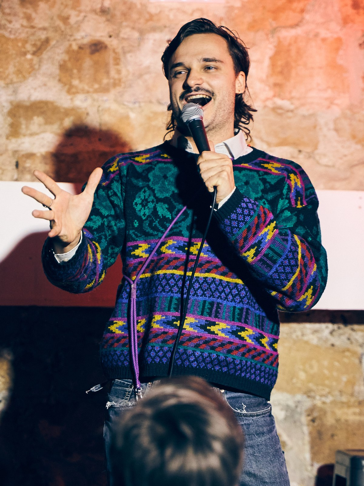

Humoriste · Paris, et au-delà
PaukOn se
rencontre ?
Du stand-up, des chansons et des inconnus qui finissent par rire ensemble.Paul Brunstein-Compard · humoriste et improvisateur
Comedy clubs · théâtres · festivals
À Paris, partout en France et à l’étranger.

En ce moment
Deuxième spectacle · en création
Merci pour
votre attention
Titre provisoire
On veut tous être regardés. Mais est-ce qu’on prend encore le temps de se rencontrer ?
Pauk explore le besoin de plaire, les rencontres et nos contradictions dans une époque où tout se dispute notre attention. Du stand-up, de l’improvisation et une relation directe avec le public.
Le voir sur scène
Les prochaines dates seront annoncées ici. Contacter Pauk pour connaître les représentations à venir.
Poulet Comedy Club
Un lundi sur deux · Pantin
Le rendez-vous stand-up de Pauk.
Au Poulet Comedy Club, Pauk prend le micro, présente le plateau et partage la scène avec d’autres humoristes. Un rendez-vous pour découvrir des univers et des blagues en rodage.

Un aperçu de son humour
Sur scène, en musique ou à la télévision.
Toutes les vidéos →

De la scène à la transmission
Vos premières minutes.
Votre prochain spectacle.
Professeur de stand-up, d’improvisation et de théâtre, Pauk accompagne aussi les humoristes en cours particuliers. Pour se lancer, retravailler un texte ou préparer la scène.
Ils lui donnent la parole
Comédie+ · France Culture · franceinfo
Passages sur scène, entretiens sur l’humour et prises de parole dans les médias.
Presse, biographie et photos →On en parle ?
Pour programmer Pauk, organiser un atelier ou travailler vos blagues en cours particulier.